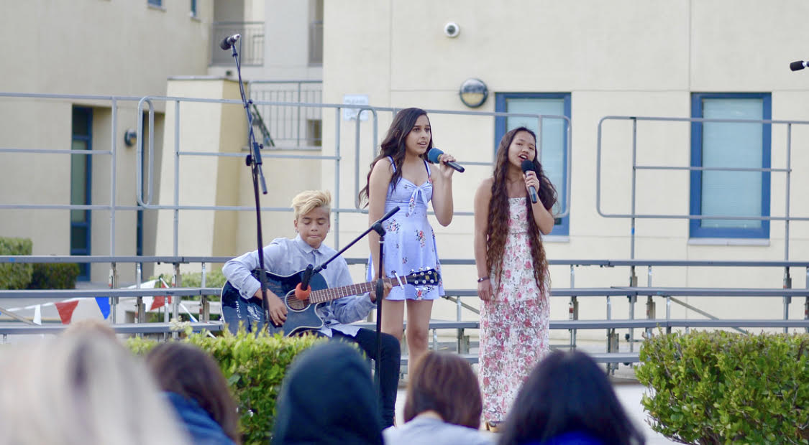

Hannah Abad
I have been attending school at the University of California, Riverside for four quarters now. In high school, I was in choir for four years, and I thought I wanted to become a Choral Director or Music Therapist when I graduated college, so I came to UCR majoring in Music and Culture. Unfortunately, I decided not to take that route and wanted to dive into the world of mental health instead. I wanted to declare Psychology, but due to Psychology being impacted, I am currently undeclared. I am looking to declare Sociology before my third year begins. I have been a part of UCR's Filipino student organization, UCR Katipunan, the entire time I have been at UCR. I volunteer at my student organization's cleanups, and Stussy sales. I participate in the fundraisers. I am active in the events my club holds, such as Friendship Games, Katipunan Experience, and PCN-- Philippine Culture Night. Friendship Games is a day where all the Filipino student organizations from every college in California, Nevada, Arizona, and even Hawaii comes to California State University, Fullerton to participate and compete in field games. It’s a great opportunity to network with other Filipino students and to just have fun. The Katipunan Experience is a retreat-like event for Filipino high schoolers to come and stay at UCR for a weekend, and learn all about what our club has to offer. It also gives them a taste of what college will be like. PCN is a night where my student organization celebrates the culture we all share and love. A play is written reflecting the Filipino experience. Filipino folk dances and songs are incorporated into the show. We prepare for this night for six months, and it is worth all of the sleepless nights.
I plan to start volunteering at Big Brothers and Big Sisters of America next year because I am en route to becoming a Social Worker. Since, Psychology is full; I had to put aside my dreams of becoming a therapist. However, I chose my new path-- Social Work-- because I am blessed and privileged enough to have a loving and caring family, but I know we live in a world where not all children grow up with that kind of nurture. I believe Social Work is more fitting for me because having mental health issues myself, I do not think I would be able to help others with their own mental health issues. As a Social Worker, there are still mental health issues, but that is not the main focus as a Social Worker. I want to take steps to give these children a beautiful childhood in which they will go on to lead bright and happy lives.
This summer, I applied for jobs, received a few interviews, but in turn had to deny job offers because of the military grants I receive from my dad’s service in the Air Force. I am unable to make over five thousand dollars a year. I am fine with not working because my tuition is free. I plan to volunteer at animal shelters, and as I stated above, Big Brothers and Big Sisters of America.
Experience
Volunteer at Stussy Sale
• Responsible for checking out customers
• Folds clothes, cleans up clothes that customers leave
General Member of UCR Katipunan
• Volunteer at KatiKleans and Stussy Sales
• Volunteer at Katipunan Expeirence
• Performed in Philippine Culture Night
Education
UC Riverside
Portfolio
